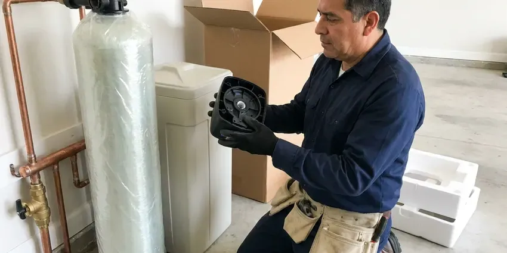
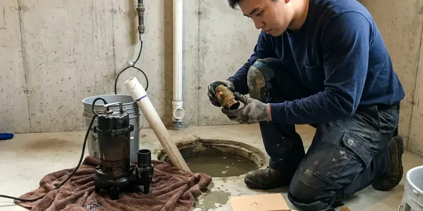
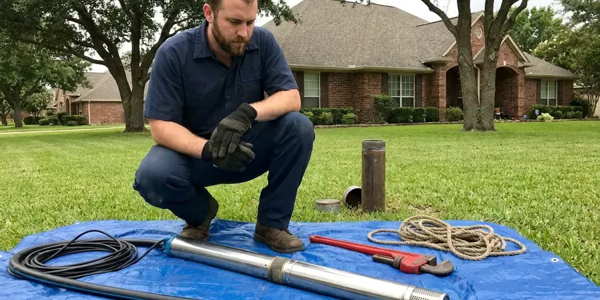

Plumbing Replacement in Dickinson, ND
Water heaters, well pumps, water lines and sewer pipes all wear out. We replace them across Dickinson, ND with upfront pricing and clean work.
- Upfront Replacement Pricing
- Upfront Pricing
- Licensed North Dakota Plumbers
- Fast, Reliable Service
Replace Failing Plumbing Before It Lets You Down in Dickinson, ND.
Our experienced technicians are ready to provide durable, code-compliant plumbing solutions for your property.
Professional Plumbing Replacement Services in Dickinson, ND
At HPN Plumbing, we understand that a plumbing replacement can be a major investment for homeowners in Dickinson, ND. We use high-quality materials and proven techniques so every replacement, from a simple faucet to an entire home repipe, meets high standards for durability and performance.
Our expertise includes:
- Durable Sewer Line Installations
- Well pump and pressure tank upgrades
- High-Efficiency Water Heater Replacements

Additional Plumbing Replacement Services in Dickinson, ND
When repairs are no longer enough, our replacement services in Dickinson, ND deliver modern, efficient equipment installed right.



Water Softener Replacement in Dickinson

Professional sump pump replacement, Dickinson

Professional well pump replacement, Dickinson

Customers
Why Choose HPN Plumbing for Plumbing Replacement in Dickinson, ND?
Choosing HPN Plumbing means you are getting a team that understands local plumbing challenges. Heavy, expansive clay soils are common in North Dakota, and they swell and shrink with moisture and frost, stressing foundations and buried pipe. We account for everything from hard water scale buildup to soil movement affecting underground pipes.
- Local Knowledge, We know Dickinson's plumbing codes and common issues, ensuring compliant and effective replacements.
- Local Expertise, We understand the plumbing challenges posed by North Dakota soil conditions and climate, ensuring tailored solutions.
- Certified Plumbers, Our technicians are licensed, insured and regularly trained on current plumbing technologies and safety protocols.
Citywide Coverage
We extend our professional plumbing replacement services to all areas within Dickinson, so no matter your location, you have access to reliable and professional plumbing solutions from HPN Plumbing.
Experienced Team
Each technician is licensed and insured, bringing a wealth of knowledge to your plumbing replacement. Their expertise means your installation will be efficient, durable and up to code.
Safety-First Approach
Safety and code compliance are top priorities on every plumbing replacement project we take on in Dickinson. We follow all local and state plumbing codes, securing necessary permits and conducting thorough inspections.
Trusted Certified Dickinson Plumbing Services Professionals
At HPN Plumbing, we take pride in providing licensed, certified plumbing services throughout Dickinson, ND. Backed by recognized industry credentials, our experienced plumbers combine technical skill with genuine customer care. Whether it is repair, installation, or maintenance, we follow strict safety and quality standards to deliver long-lasting results you can trust.
Call Us Now PHCC Plumbing Contractor Recognition
PHCC Plumbing Contractor Recognition Better Business Bureau (BBB) Accreditation
Better Business Bureau (BBB) Accreditation Angi Certified Pro
Angi Certified Pro ISO 9001 Quality Management Certification
ISO 9001 Quality Management CertificationTrusted Plumbing Replacement Services in Dickinson, ND
Tankless Water Heater Replacement in Dickinson, ND
Upgrade to endless hot water with a tankless water heater replacement. These units heat water on demand, saving energy and space, which is a great benefit for Dickinson homes. We focus on replacing older tankless units or converting from traditional tank heaters to high-efficiency tankless models from brands like Rinnai and Noritz. Our service includes assessing your home's gas line capacity or electrical service, ensuring proper venting and precise installation to maximize efficiency and longevity.

Water Heater Replacement in Dickinson
When your water heater is leaking, not heating or providing too little hot water, it is often more economical to replace it than to repair it, especially if it is over 10 years old. We install standard tank water heaters, sized properly for your home's needs and compliant with current energy efficiency standards. Our team handles the safe removal of your old unit and the precise installation of your new one, connecting gas or electric lines and confirming correct venting and pressure relief valve operation for performance and safety.
Well Pump & Pressure Tank Replacement in Dickinson
For rural properties in and around Dickinson that rely on well water, a failing well pump or pressure tank can leave you with no water at all. We diagnose issues with your current well system and provide professional replacement for submersible or jet pumps. We also replace faulty pressure tanks, so your well system maintains consistent water pressure and your pump lasts longer. Proper sizing and installation are crucial for efficient operation and a reliable water supply.
Sewer Line Replacement in Dickinson
Persistent sewer backups, foul odors or lush spots in your yard can signal a failing sewer line. Heavy, expansive clay soils are common in North Dakota, and they swell and shrink with moisture and frost, stressing foundations and buried pipe. We offer comprehensive sewer line replacement using trenchless technology whenever possible, minimizing disruption to your landscaping. For more severe damage, traditional excavation is performed with careful attention. We make sure new lines are properly graded, connected and compliant with local Dickinson plumbing codes, preventing future blockages and costly repairs.
Water Line Replacement in Dickinson, ND
A leaking main water line can lead to major water loss, high bills and foundation damage, which is a serious concern for homes on slab foundations. Our water line replacement services address issues like corroded pipes, leaks or low water pressure. We locate the leak, excavate the area if necessary and replace the damaged section or the entire line with durable PEX or copper piping. We make sure of a secure, leak-free connection from the meter to your home, bringing back reliable water flow.
Well Pressure Tank Replacement in Dickinson
If your well pump is cycling too frequently or you have inconsistent water pressure, your pressure tank might need replacing. HPN Plumbing installs new well pressure tanks, so your well system operates efficiently and your well pump lasts longer. We correctly size the tank to your system in Dickinson, improving water delivery and energy usage.
Sump Pump and Well Pump Replacement in Dickinson, ND
For homes with basements or relying on well water, a working pump is essential. HPN Plumbing replaces faulty sump pumps and well pumps with high-quality, dependable models. We make sure of correct sizing and installation for effective water removal and consistent water pressure, protecting your Dickinson home from flooding and keeping a steady water supply. We work with brands like Zoeller and Grundfos.

Water Softener Replacement in Dickinson, ND
Hard water leads to mineral buildup in pipes and appliances. Water softeners and filters are popular around Dickinson because they protect water heaters, dishwashers and faucets. If your old water softener is no longer effectively removing minerals, or if it is over 15 years old, a replacement will protect your plumbing and improve water quality. We replace all types of water softeners, including salt-based and salt-free systems, sized for your household's water usage and installed correctly on your main water line to provide truly soft water throughout your Dickinson home.
Plumbing Replacement Near Me in Dickinson, ND
If you are searching for plumbing replacement near me because your water heater just failed or your sewer line keeps backing up, call our local team. We respond fast and can often replace water heaters the same day. Larger projects are scheduled promptly with a clear timeline.
Our plumbers work in Dickinson every day and understand local water conditions, permit requirements and housing styles. That knowledge helps us recommend replacements that hold up. You get one team for every replacement need.
HPN Plumbing at a Glance
- Fully licensed plumbing team covering Dickinson, ND
- Same-day appointments and 24/7 emergency response
- Clear written estimates, no hidden fees
- 4.9-star rated by 408+ North Dakota customers
Dickinson Map
Dickinson Information
- Population
- 25,130
- Area codes
- Local
- Service area
- Dickinson and communities within 40 miles
- Nearby
- Watford City, Mandan, Bismarck, Williston
Hard water, temperature extremes and shifting soil can shorten the life of water heaters, pipes and sewer lines, making timely replacement a smart way to avoid costly water damage.
Expert Services
Trust our professionals for reliable HPN Plumbing solutions in Dickinson, ND.
Our Specialized Plumbing Services in Dickinson, ND
At HPN Plumbing, we provide a complete range of plumbing services across Dickinson, ND. From leak detection to full system installations, our team ensures fast, precise, and affordable service for both residential and commercial properties. Explore our core services below:


How We Handle Plumbing Replacement in Dickinson, ND
From initial assessment to final inspection, HPN Plumbing provides a streamlined and professional plumbing replacement experience.
Request a Quote
Call (701) 403-1348 and describe the problem or the equipment you want replaced. We schedule a visit and give you repair and replacement options with upfront pricing.
Remove and Replace
We remove the old equipment or pipe, install the replacement and make required code upgrades. Old materials are hauled away.
Test and Review
We test the new system for proper operation and leaks, and schedule inspection when required. Then we review maintenance and warranty details with you.
Frequently Asked Questions About Plumbing Replacement in Dickinson
The cost of plumbing replacement in Dickinson, ND varies widely based on the type of service. A water heater replacement can range from $1,200 to $3,500, while a sewer line replacement might be $3,000 to $15,000 or more. Whole-home repiping can cost between $4,000 and $15,000. We provide detailed, clear estimates after an on-site assessment.
Common signs include frequent leaks, discolored water, persistent low water pressure, recurring clogs or visible corrosion on pipes. If repairs are becoming frequent and costly, replacement is often the more cost-effective long-term solution.
Consider the age of the equipment, the cost of repair compared with replacement and how often it has needed service. We give you both options with pricing so you can choose.
While some minor plumbing repairs can be DIY, major replacements like water heaters, sewer lines or repiping should always be handled by licensed professionals. These jobs involve complex systems, potential safety hazards (gas, high water pressure) and strict code compliance. Improper installation can lead to leaks, damage and even serious safety risks, costing more in the long run.
We install water heaters from Bradford White, Rheem and A.O. Smith, tankless units from Rinnai and Navien, and quality softeners and well pumps from trusted manufacturers.
If you have isolated leaks on newer pipes, a repair might suffice. However, if you have older galvanized, polybutylene or lead pipes, or if leaks are widespread and frequent, replacement is usually recommended. Our plumbers can conduct an inspection, often with camera technology for sewer lines, to provide an accurate assessment and recommendation.
The timeline for plumbing replacement depends on the complexity of the job. A water heater replacement usually takes 2 to 4 hours. A main water line or sewer line replacement can take 1 to 3 days. Whole-home repiping projects usually span 3 to 7 days, depending on the size of the house and accessibility.
Most tank water heater replacements take two to four hours. Code upgrades or relocations can add time.
What People Are Saying About Our Plumbing Experts?

Robert G.
The trenchless sewer replacement saved our front yard. They walked us through the camera inspection footage first so we knew exactly what we were paying for.
Sewer Line Replacement · Minot AFB, ND
Mark T.
When our office needed drain cleaning, HPN Plumbing provided quick, reliable service. The plumber arrived on time and made sure every drain flowed perfectly before leaving. Very satisfied.
Drain Cleaning · Minot AFB, ND
Patricia H.
We had a slab leak that two other companies could not find. HPN Plumbing located it in under an hour, explained our options, and the price matched the quote to the dollar.
Slab Leak Repair · Williston, NDJames P.
Our commercial plumbing system had a leak under the sink, and HPN Plumbing handled it professionally. The plumbers arrived quickly and restored everything without disruption to our customers.
Commercial Plumbing · Minot, ND
Emily R.
I called HPN Plumbing for plumbing repair, and the technician was fast, polite, and thorough. They explained the problem clearly and fixed it the same day. I will definitely hire them again. Highly recommended!
Plumbing Repair · Watford City, ND
Sofia M.
Two new toilets installed in one visit, no mess left behind, and the tech even adjusted a faucet he noticed was dripping. Fair pricing and really friendly.
Toilet Installation · Watford City, ND